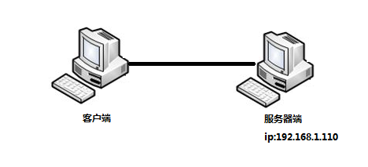
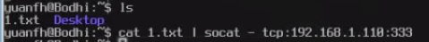
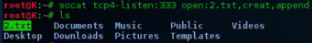
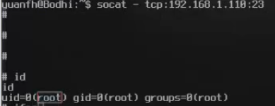
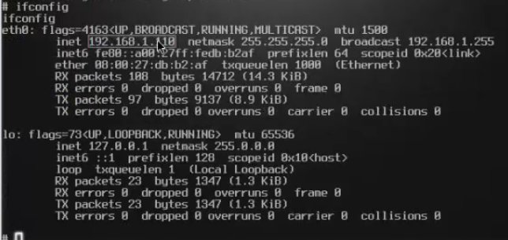
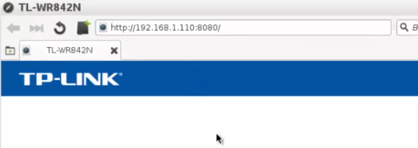
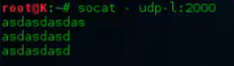
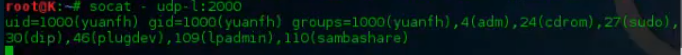
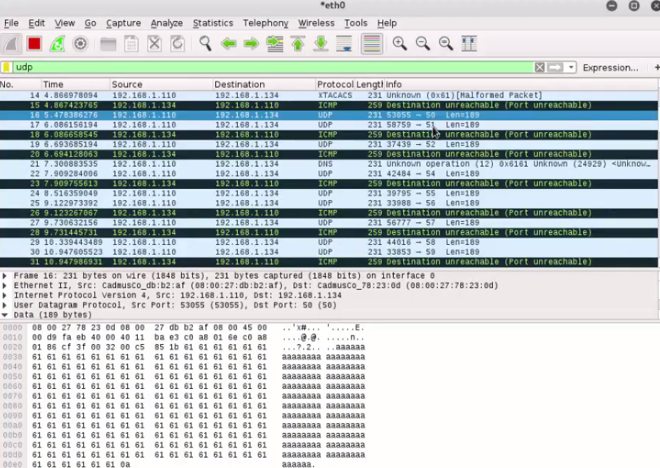
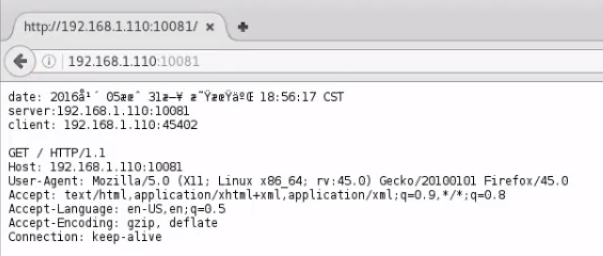

被称为nc++，双向数据流通道工具。
假设有这样一个场景

相互通信
创建服务器端，侦听2222端口
socat - tcp4-listen:2222
查看2222端口是否打开
netstat -pantu | grep :2222
客户端连接到服务器端
socat tcp:192.168.1.110:2222
服务端和客户端就能相互通信了
传输文件
服务器端
侦听333端口
socat tcp4-listen:333 open:2.txt,creat,append
客户端
cat 1.txt | socat- tcp:192.168.1.110:333
客户端通过333端口发送一个1.txt文件给服务器端

在服务器端就接收到了文件并保存为2.txt

传递shell
服务器端
socat tcp-l :23 exec:sh,pty,stderr
tcp-l 是tcp4-listen的简写
客户端
socat - tcp:192.168.1.110:23
客户端通过23端口就得到了一个服务器端的shell


端口转发
服务器端
socat tcp4-listen:8080,fork tcp4:192.168.1.1:80
当有客户端来访问本机的8080端口时，就把这个请求做一个转发，转发到80端口，访问8080端口相当于访问192.168.1.1的80端口
在客户端
访问服务器的8080端口，就相当于访问服务器的80端口

UDP协议传输数据
服务器端
socat - udp-l:2000
客户端通过2000端口发送数据
echo "aaaaaaaaaaaaaaaaaaaaaaaaaaaaaaaaaaaaaaaaaaaaaaaaaaaaaaaaaaaaaaaaaaaaaaaaaaaaaaaaaa" | socat - udp-datagram:192.168.1.110:2000
服务器端就接收到了
还可以 socat - udp-datagram:192.168.1.110:2000
服务器端就收到了数据

UDP协议传输命令
服务器端
socat - udp-l:2000
客户端
echo "`id`" | socat - udp-datagram:192.168.1.110:2000
服务器端相当于执行了id命令

UDP全端口任意内容发包
可以做扫描器
客户端
for PORT in {1..65535}; do echo "aaaaa" | socat - UDP4-DATAGRAM:192.168.1.110:$PORT; sleep .1; done
抓包可以看到，客户端在不停地向服务器端的端口发包

搭建简单的web服务器
在服务器端
socat -T 1 -d -d TCP-L:10081,reuseaddr,fork,crlf SYSTEM:"echo -e \"\\\"HTTP/1.0 200 OK\\\nDocumentType: text/plain\\\n\\\ndate: \$\(date\)\\\nserver:\$SOCAT_SOCKADDR:\$SOCAT_SOCKPORT\\\nclient: \$SOCAT_PEERADDR:\$SOCAT_PEERPORT\\\n\\\"\"; cat; echo -e \"\\\"\\\n\\\"\""
打开客户端浏览器输入服务器端的地址以及端口，可以看到返回的信息

用socat开启服务器： socat tcp-listen:8888 echo 将在本地TCP端口9999监听
用socat测试服务器： socat tcp:127.0.0.1:8888 open:in.dat,rdonly!!open:out.dat,create,wronly 将会把文件in.dat中内容发送到本地的8888端口，并将接收到的数据存放在out中 适合对echo服务器进行数据压力测试